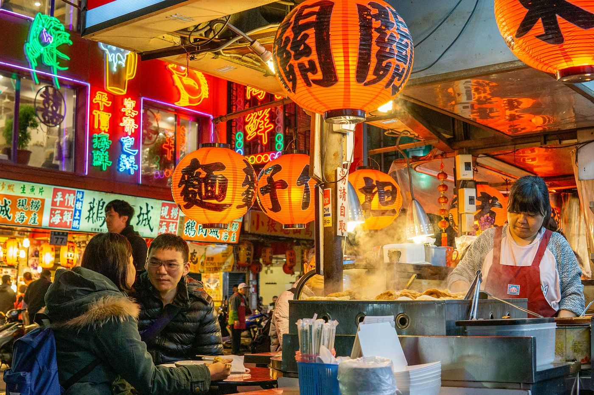
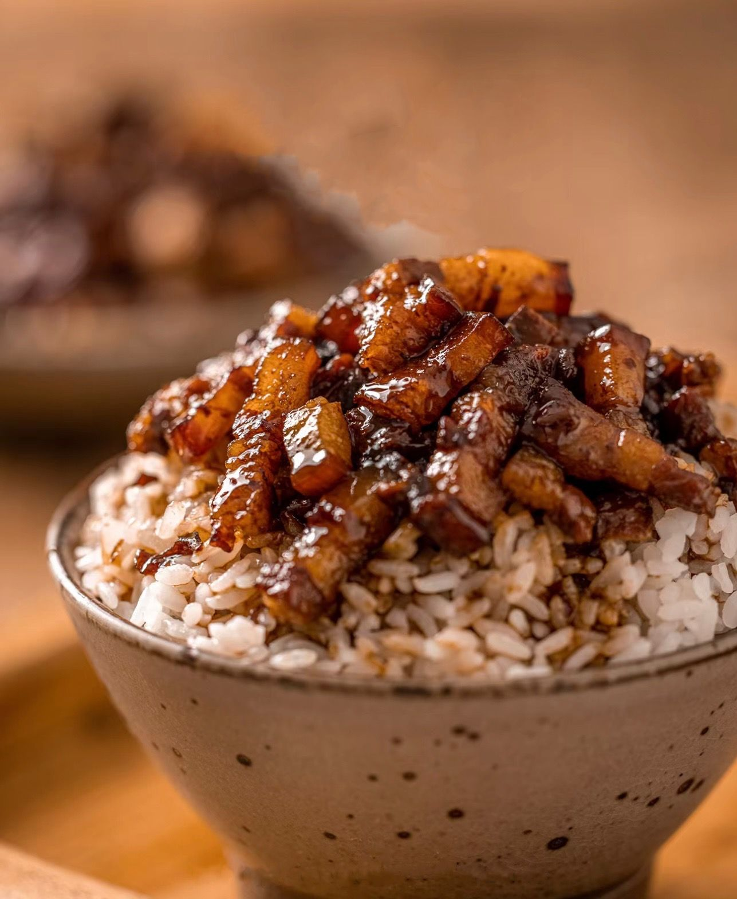
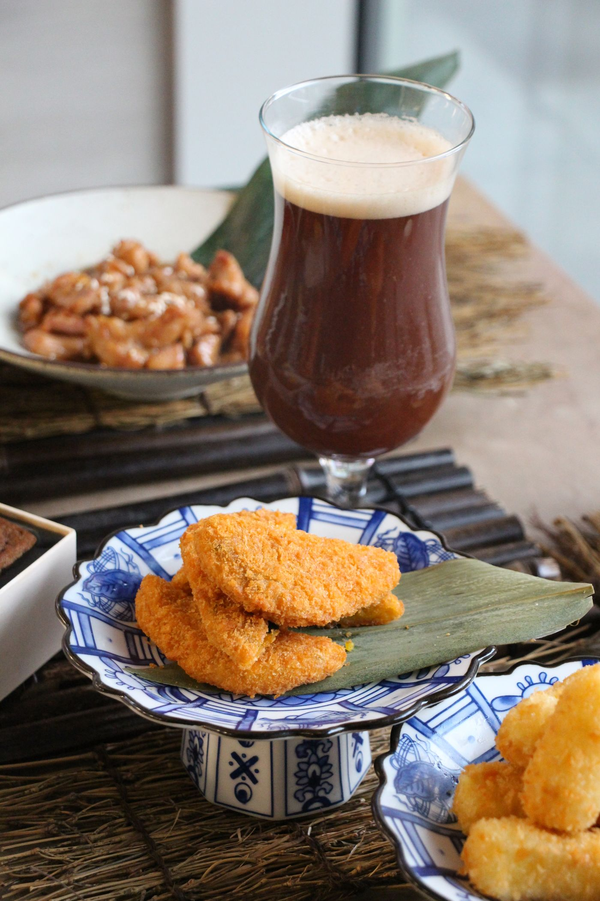
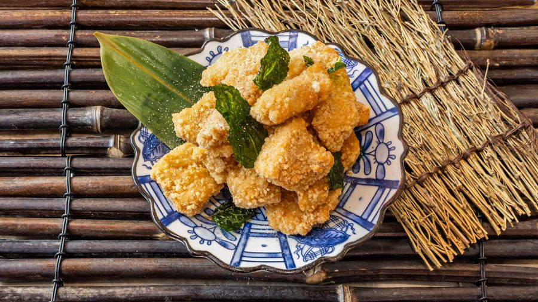
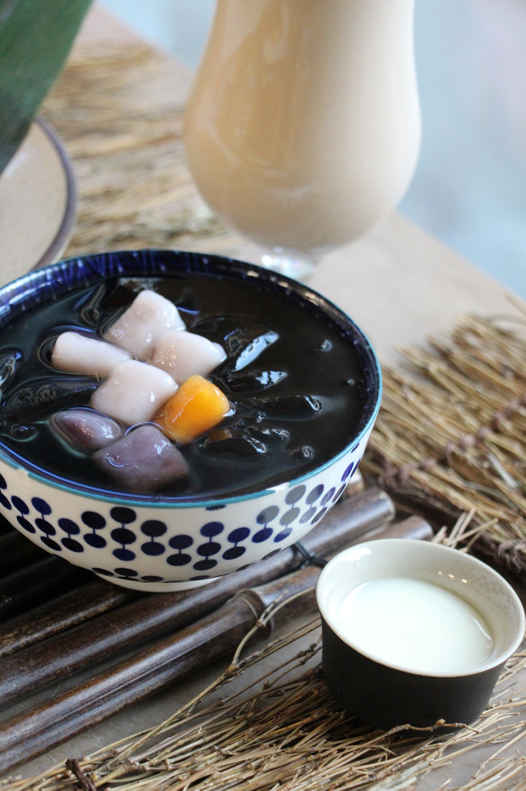

Our story
From Taipei to London
We bring the heart of Taiwan to the Royal Docks: a cosy place to eat traditional comfort food and bentos, made with care and fresh ingredients.

Where we started
Every meal tells a story
Our journey began in the busy streets of Taipei, where food is something you share at a market stall as much as at a family table.
At S'MORE we cook from traditional recipes, so each dish tastes the way it does at home in Taiwan. Pork belly braised slowly in soy until it falls apart over rice. Chicken fillets as big as the plate, fried crisp the night market way. Tea shaken by hand.
Join us in celebrating the food and culture of Taiwan, here in London.

Discover the flavours of Taiwan
Hot, sour, sweet and fresh
Hot
Chilli, garlic and basil tossed through salt and pepper dishes and popcorn chicken.
Sour
Our house sweet and sour sauce, and cooling plum juice from the teahouse.
Sweet
Mango pomelo sago, taro balls on grass jelly, and soy glazes on the grill.
Fresh
Seasonal greens with every bento and broths simmered for hours.



Come and see what sets us apart
Open every day at 18 Royal Crest Avenue.